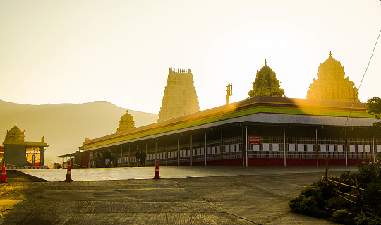

1.Kashi
Kashi is one of the oldest cities in the world. Its name is mentioned in the Rig Veda, where it's called a moksha nagri, for it is believed that whosoever dies in Kashi attains immediate salvation. Therefore, Hindu believers in their old age prefer to surrender their life to God at Kashi
2.Tirupathi
Venkateswara Temple is an important Vaishnavite temple situated in the hill town of T irumala in Tirupati district of Andhra Pradesh,built by Tamil king. The Temple is dedicated to Lord Venkateswara, an incarnation of Vishnu, who is believed to be appeared here to save mankind from the trials and troubles of Kali Yuga.

3.Kerala
Nestled on the southern coast of India, Kerala is a jewel of enchanting beauty and rich cultural heritage that beckons to be explored. Flanked by pristine beaches, tranquil backwaters, abundant wildlife, and delectable cuisine, this destination promises an unforgettable experience on the Malabar Coast.